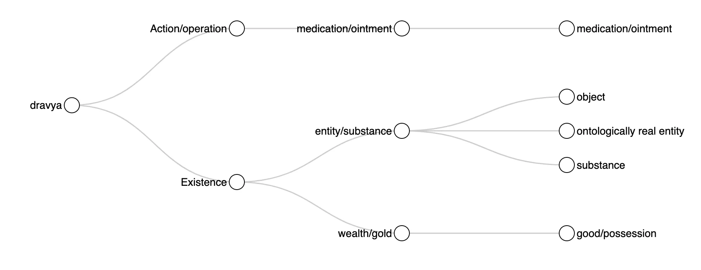
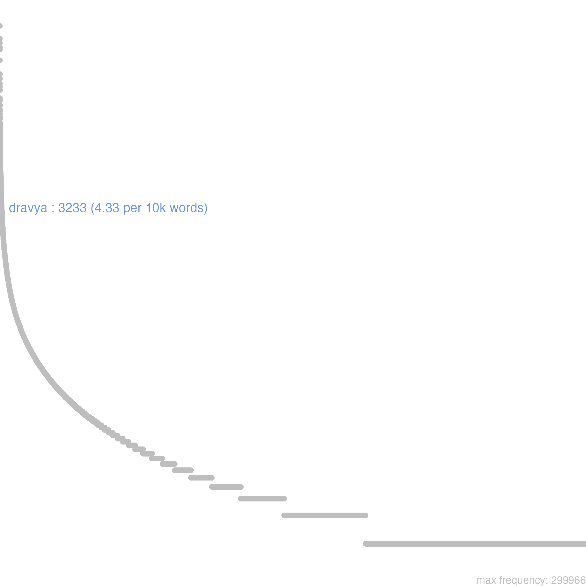
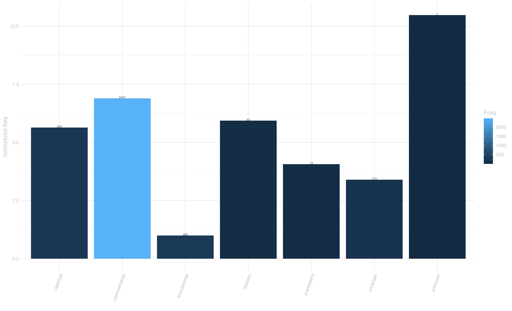
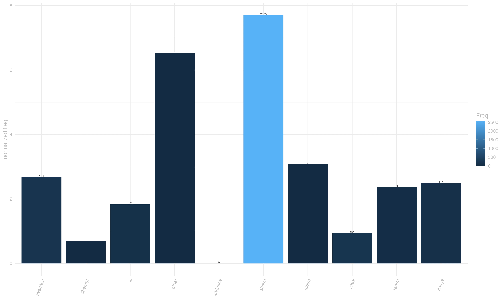
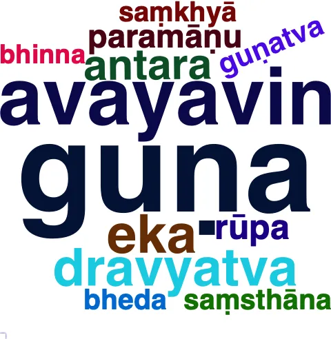

4 dravya
guṇ-^āṇu-dravya-saṃghātai rūpaṃ bālair vikalpyate / ekaikam aṇuśo n ^āsti ato apy arthaṃ na vidyate // [laṅkāvatārasūtra, 136] “The ignorant imagine that things originate from the accumulation of qualities, or atoms, or substances; but there is not a single atom in existence, and, therefore, there is no external world.” [Suzuki, 260]
4.0.1 overview
While fairly polysemic, the semantic spectrum of dravya lies entirely within the domain of Existence, where it variously conveys the notion of substance, covering highly abstract philosophical instances of this concept, down to very concrete applications.
In philosophical discourse, such substance takes the form of a ontologically real entity, understood as the substratum underlying reality and experience, usually with an emphasis on its impermanence and dependent origination.1 With a more concrete denotation, dravya refers to substance as the fundamental material or essence out of which things are made.2 A closely related meaning is the broader, and even more concrete sense of object, typically referring to the objects of the senses, or the objects of experience.3 Finally, at the most concrete end of dravya’s semantic spectrum lie the senses of “good/possession”4 and “medication/ointment”.5
4.0.1.1 distribution in our sample
In our sample of annotated sentences, dravya’s distribution across textual traditions shows a clear concentration in pramāṇa literature, followed by yogācāra, madhyamaka sources. Overall occurrences of this word are most concentrated in śāstras, predominantly from the classical and commentarial periods.

4.0.2 frequency & register
Dravya is a high-frequency word in our corpus, with its highest normalized frequency in śāstra literature, confirming our annonated data’s representation of the term’s primary textual habitat.
The commentarial period exhibits the highest frequency, followed by classical texts, suggesting that this term acquired increasing importance with the evolution of Buddhist philosophy.
Sūtra literature shows lower frequency despite containing some discussions of the term.6
This distributional pattern indicates that dravya in Buddhist literature is used mostly in a specialized, philosophical sense. Still, the non negligible amount of occurrences in narrative material (~300 between literary and avadāna texts), couple with the every-day senses of possessions and medication, are a reminder that this was a general language word as well as a philosophical term.



4.0.3 context
Several collocational patterns featuring dravya are noteworthy. The compound dravya-sat (substantially existent) appears often in contexts examining the ontological status of phenomena, where it is typically contrasted with prajñapti-sat.7 The negated form a-dravya (non-substantial) is frequent, particularly in madhyamaka literature, where discussions of the absence of inherent existence are prominent.8 The adverbial form dravyataḥ (substantially/in terms of substance) appears frequently in ontological discussions, again often contrasted with prajñapti, or conventional existence.9
Another notable pattern involves

4.0.4 connotation
Semantic prosody analysis reveals that dravya is used predominantly with neutral tones, with some notable negative coloring and virtually no positive usage attested in our annotated sentences.
The neutral usage typically occurs in technical philosophical discussions, such as in the Abhidharmakośabhāṣya: “yāvanti hi saṃyoga-dravyāṇi tavanti visaṃyoga-dravyāṇi”,10 where the term functions as a technical philosophical category without evaluative connotation.
The negative prosody frequently appears in contexts discussing the ontological status of phenomena, particularly in passages that deny substantial existence. For example, the Laṅkāvatārasūtra states “prajñapti-satyato hy ātmā dravya san na hi vidyate”,11 where dravya carries negative implications regarding ultimate reality.
This entry is based on version 6 of of the Visual Dictionary of Buddhist Sanskrit, see data at zenodo.org/records/13985112
sad-bhūten ātmanā jāter an-utpann-^ā-niruddhatā / a-vastutv-ā-svabhāvatve tath ^āpy a-dravya-sattvataḥ // 5—79 // madhyamakahṛdayakārikā 5.78
“5.79 [Things] do not arise or cease, are not things, and are empty, because they do not arise from themselves and because they are not substantially real.” [Eckel 279]↩︎tatra na tāvat guṇ-^ādayaḥ dravya-niṣedhen ^aiva teṣāṃ niṣedhāt / tarkabhāṣā_mokṣākaragupta 64
“Of these, neither quality nor the others [i.e. karman, sāmānya, and viśeṣa] are [the external reality], since their existence is negated through the negation of the substance [which forms their substratum].” [Kajiyama 141]↩︎yadi yāvad vicchinnaṃ nān-^ekaṃ cakṣuṣo viṣayas tad ekaṃ dravyaṃ kalpyate pṛthivyāṃ krameṇ ^etir na syād gamanam ity arthaḥ / viṃśatikā 8
“If one entity as a sense-object for the eye, with no separations, and no severalness, were constructed, the one couldn’t arrive at anything gradually on the Earth: that is, there could be no act of going.” [Anacker 170]↩︎yadā sarvaṃ para-dravyaṃ pathi vā yadi vā gṛhe / a-dattaṃ n ^aiva gṛhṇāti dvitīyaṃ brahma-lakṣaṇam // 35 // vajrasūcī 34
“When he does not take anything that belongs to others, unless it is given to him, whether that is in one’s house or lying on the way, possesses the second characteristic of a Brāhmaṇa.” [Mukhopadyaya 21]↩︎tebhyo na sukaraṃ javena vā palāyitum balena vā dravya-mantr-^auṣadhair vā nivartayitum / bodhicaryāvatārapañjikā 280
“It would not be easy to protect oneself from those with speed or strength, or to ward them off with drugs, mantras or medicine.” [Oldmeadow 601.1]↩︎prajñapti-satyato hy ātmā dravya san na hi vidyate / skandhānāṃ skandhatā tadvat prajñaptyā na tu dravyataḥ // [laṅkāvatārasūtra, 62]
“27. An ego-soul is a truth belonging to thought-construction, in which there is no real reality; the self-nature of the Skandhas is also a thought-construction, as there is no reality in it.” [Suzuki, 132]↩︎na ca punaḥ kula-putrasya vā kula-duhitur vā sarva-kāl-^āstitāñ ca dravya-satāṃ svabhāva-pariniṣpattiñ ca prajñapti-satāṃ paśyato nirvid-virāgo vimuktiś ca yujyate / bodhisattvabhūmi 190
“It is also unreasonable that a son of good family or a daughter of good family who believes that a substantively real form of existence is one that remains in existence at all times or [who believes] that a nominal form of existence is one that exists absolutely in that it possesses a [real] essential nature, could [develop] dissatisfaction and detachment, and [attain] liberation.” [Engle 458-9]↩︎sad-bhūten ātmanā jāter an-utpann-^ā-niruddhatā / a-vastutv-ā-svabhāvatve tath ^āpy a-dravya-sattvataḥ // 5—79 // madhyamakahṛdayakārikā 5.78
“5.79 [Things] do not arise or cease, are not things, and are empty, because they do not arise from themselves and because they are not substantially real.” [Eckel 279]↩︎prajñapty astitayā vācyaḥ pudgalo dravyato na tu / n opalambhād viparyāsāt saṃkleśāt kliṣṭa-hetutaḥ // 18—92 // mahāyānasūtrālaṃkāra 154
“93. The person is identifiable as conventionally existent and not substantial; since it is not perceived, is a distortion, is addictive, and is from an addicted cause.” [Thurman 285]↩︎“There are as many objects of combination as there are objects of dissociation.” [Pruden]↩︎
“27. An ego-soul is a truth belonging to thought-construction, in which there is no real reality; …” [Suzuki 132]↩︎